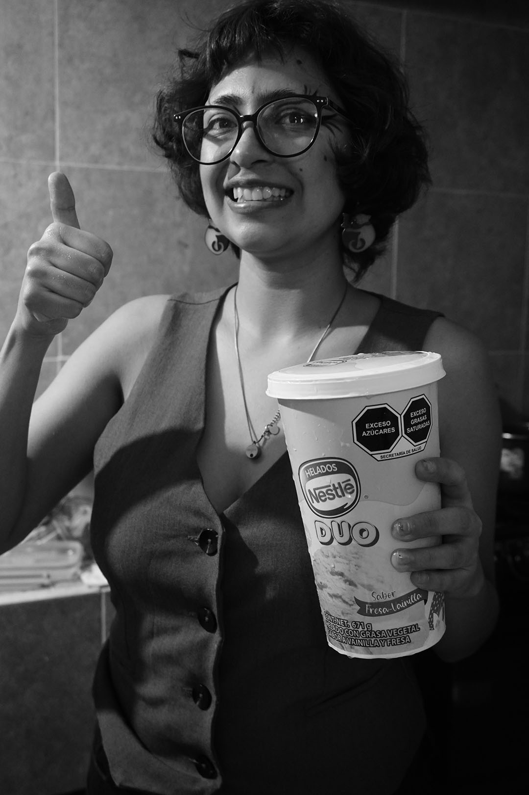

Paola Castelán
Tecámac, Estado de México.
Biología Ambiental.
25 años.
Cinco años viviendo en Lerma.
$2800 de arrendamiento.
galería
Entrevista.
Vivir sola ha sido una experiencia bastante dificil, dejar mi casa, en sí mi comunidad, fue un gran reto. Al inicio extrañaba mucho a mi familia y amigos, en general me aburría mucho. Decidí traerme todos mis peluches para recordar mi habitación.